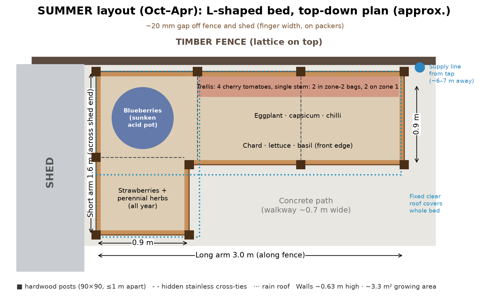
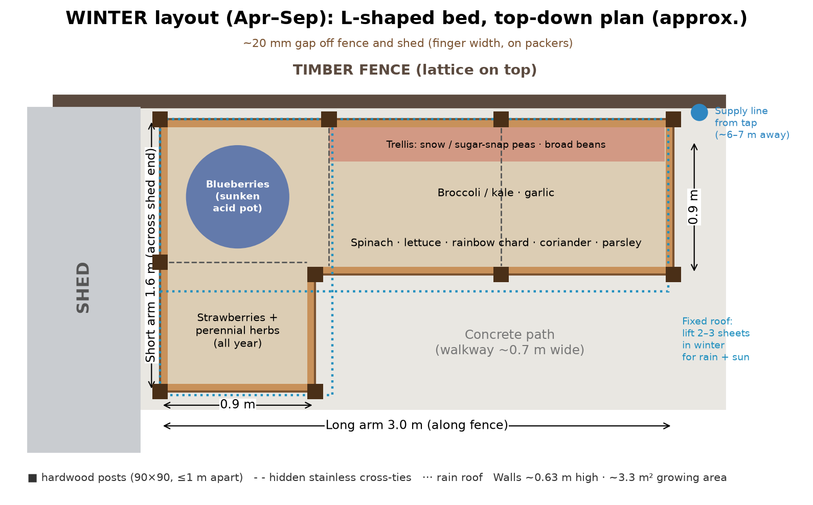

One bed, two seasons
The infrastructure stays put all year: the L bed, two valve zones, 3 soil probes, the fence trellis, the fixed clear roof, the blueberry in the fence–shed corner, strawberries and perennial herbs. Only the plantings in the long arm rotate between a warm-season and a cool-season layout.


| Zone | Summer (Oct–Apr) | Winter (Apr–Sep) |
|---|---|---|
| Short arm (fixed) | Blueberry in its acid pot in the fence–shed corner · strawberries · perennial herbs (thyme, oregano, chives) | |
| Fence trellis (back of long arm) | 4 cherry tomatoes, single stem on strings: 2 in deficit bags (valve 2), 1 control bag + 1 in the bed (valve 1) | Snow or sugar-snap peas on the trellis · broad beans. Bags replanted with peas or lifted out; valve 2 waters normally |
| Middle | Eggplant · capsicum · chilli | Broccoli or kale · garlic (plant Apr–May, lift Nov) |
| Front edge | Chard · lettuce · basil | Spinach · lettuce · rainbow chard · coriander · parsley |
| Between seasons | Optional green manure (oats + field peas) for 6–8 weeks in any gap, chopped and dug in 3 weeks before planting | |
Crop profiles per zone
Moisture targets
Each zone gets a crop profile. Deficit stress is used only for tomatoes in the fruiting stage (zone 2, summer). Greens, brassicas, peas and herbs get steady moisture all year.
Roof use
Summer: roof on, so every drop comes from the drip line. Under the closed roof, forecast rain does not replace irrigation: the app will decide from the soil probes, evaporative demand (ET) and whether the winter sheets have been lifted. Rain only counts when sheets are lifted. Winter: the app will remind you to lift 2–3 roof sheets for sun and rain, and to put them back if the probes show the bed is saturated. Lifting sheets keeps the possum net walls in place, because the net hangs from the rafters, so the sides stay closed; put bird netting over the opening. A motorised roof (later) would do this automatically.
Camera prompts per crop
Planned: tomatoes get side-shoot and truss-thinning timing prompts; strawberries runner reminders; brassicas and greens harvest-timing hints. Rough timing heads-ups, not per-fruit instructions.
Seasonal reminders
Sow, transplant and changeover reminders on the Victorian calendar: tomatoes out after Cup Day (soil above 16 °C); garlic and brassicas in Apr–May; peas and broad beans Apr–Jun; changeover in April and October.
What stays the same
Valves, probes, solar, battery and the Wi-Fi link don't change. Only the profile settings in the app switch, and the logs keep each season's results for comparison.
Planting out (Oct–Nov)
- 1 · Timing
In Victoria, plant summer crops out after Melbourne Cup (early Nov) once the soil is above 16 °C.
- 2 · Bed and soil
Filled as in build step 8: logs in the bottom third, about 1.4 m³ of veg mix, 5 cm pale sugar-cane mulch.
- 3 · Plant
Harden off seedlings for 7–10 days. Bury tomato stems deep and tie each to one string (single stem). Spacing: tomato 50 cm, capsicum and eggplant 45 cm.
- 4 · Water and feed
The planned app handles water by zone. You add liquid feed fortnightly from first flower.
- 5 · Train and watch
Pinch tomato side shoots weekly; hang fruit fly traps from December; remove lower leaves to cut blight risk.
- 6 · Harvest and changeover
First tomatoes 60–80 days after planting. In April clear summer crops, sow green manure or plant the winter layout.
Summer crops
Winter crops
Snow and sugar-snap peas, broad beans, broccoli or kale, garlic, spinach, lettuce, rainbow chard, coriander, parsley. Blueberry, strawberries and perennial herbs stay.